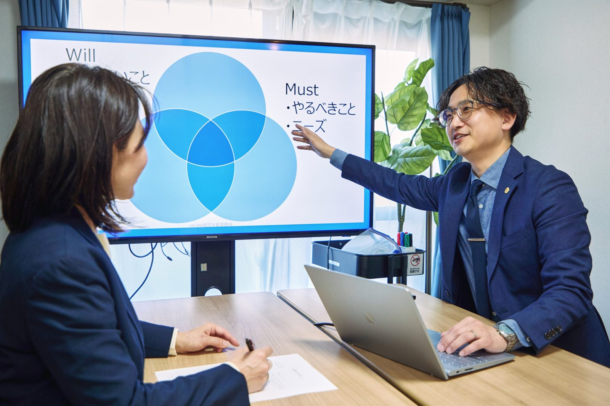
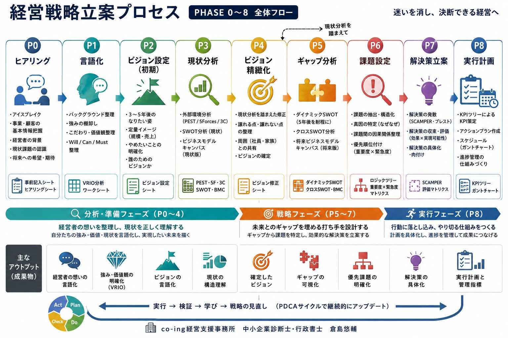
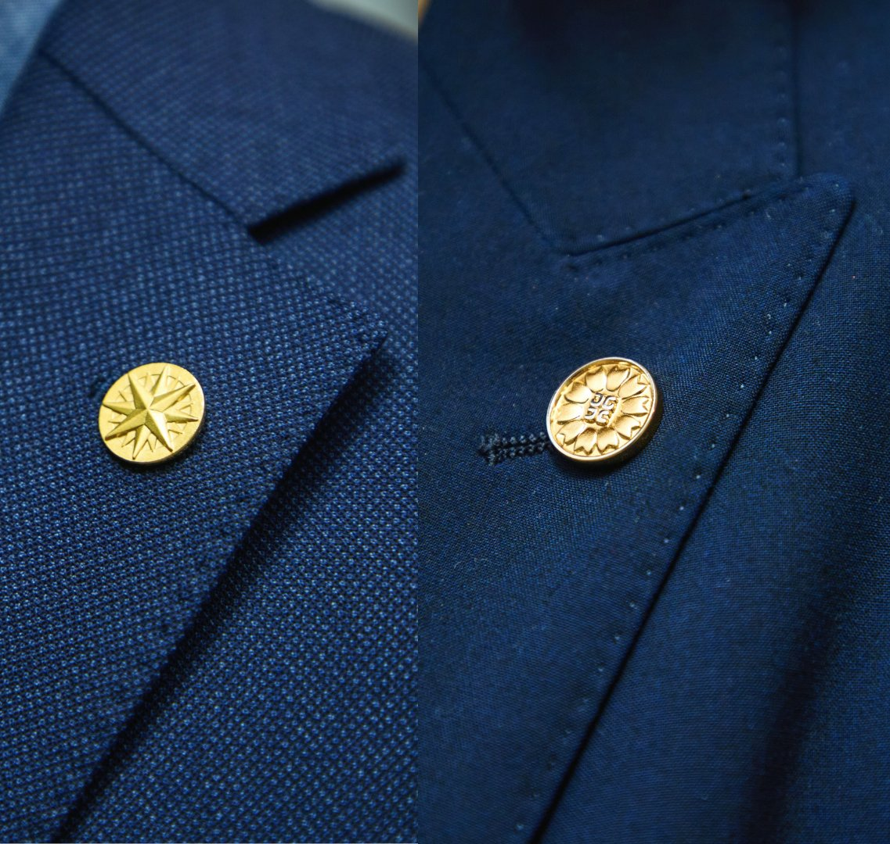
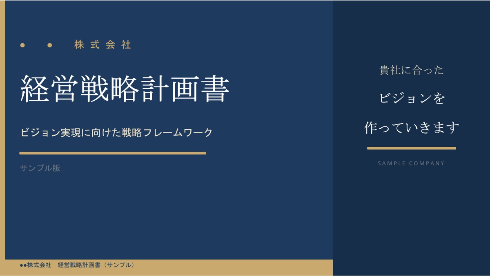
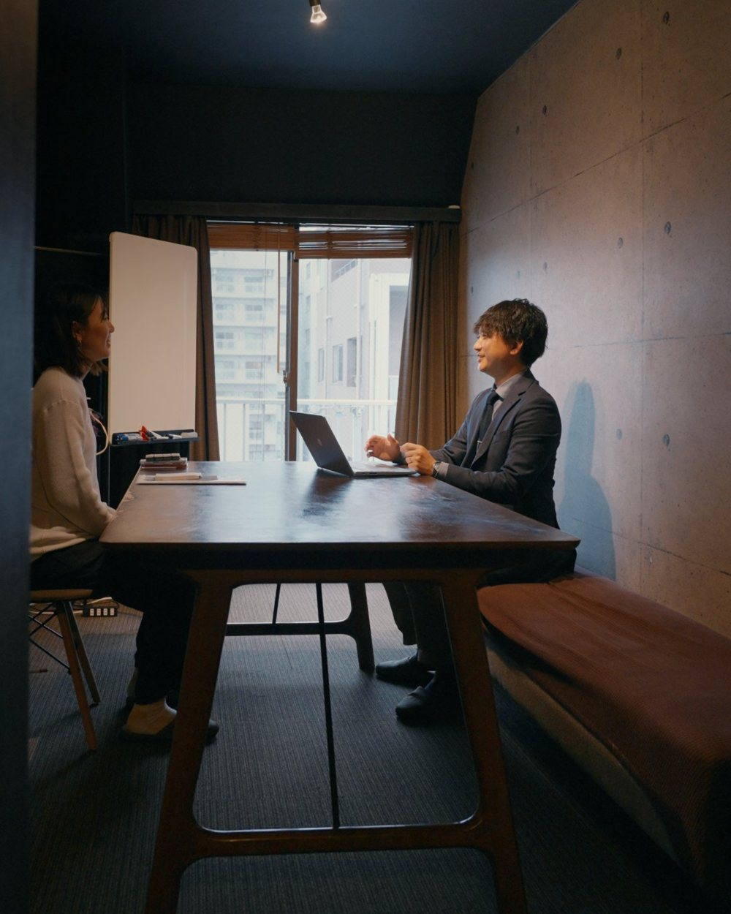
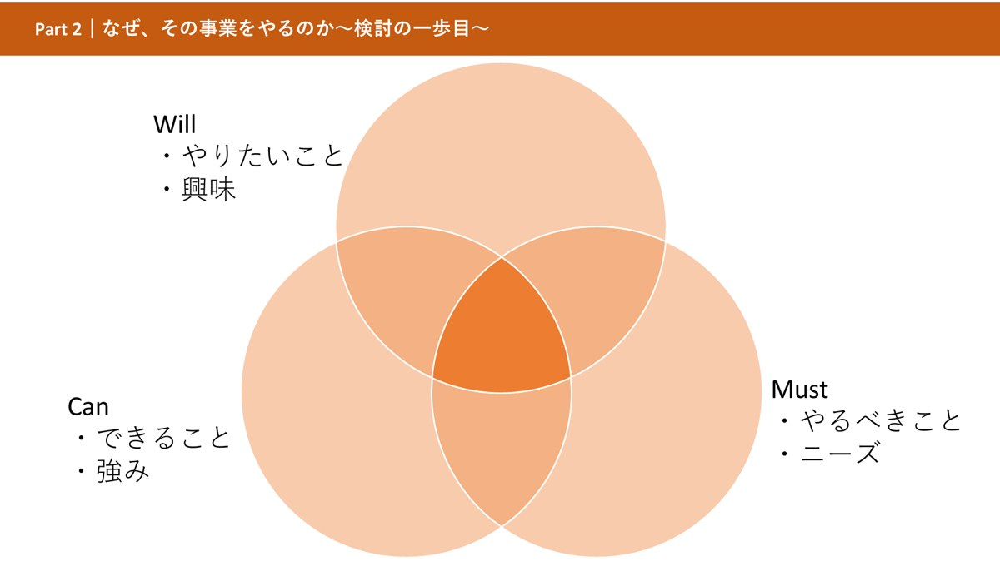
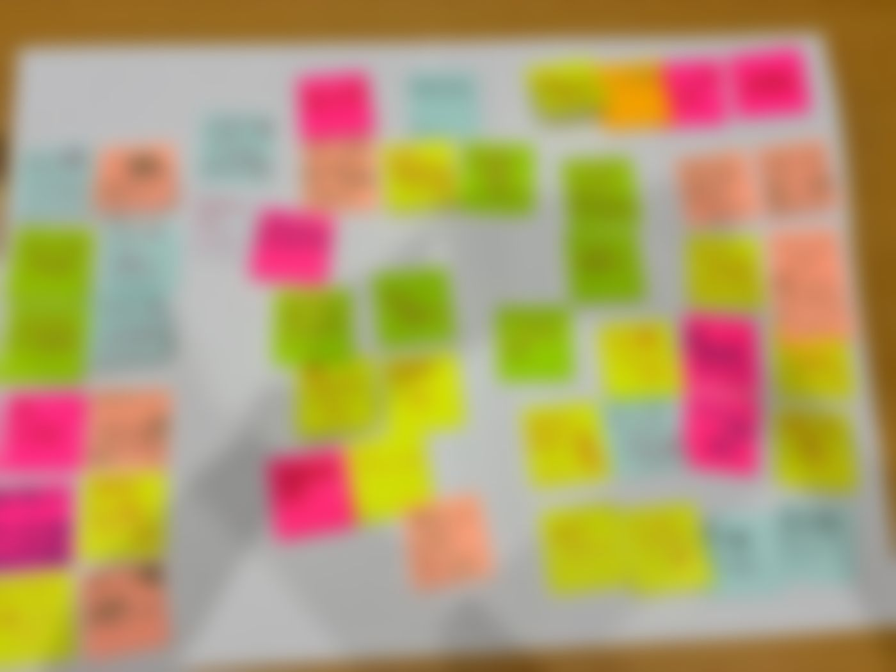
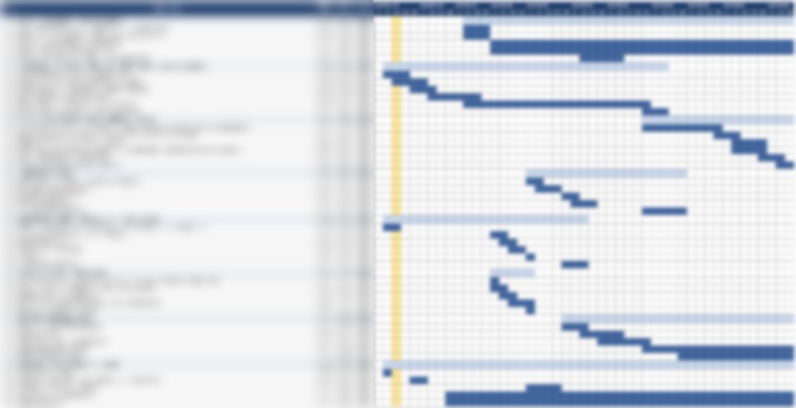
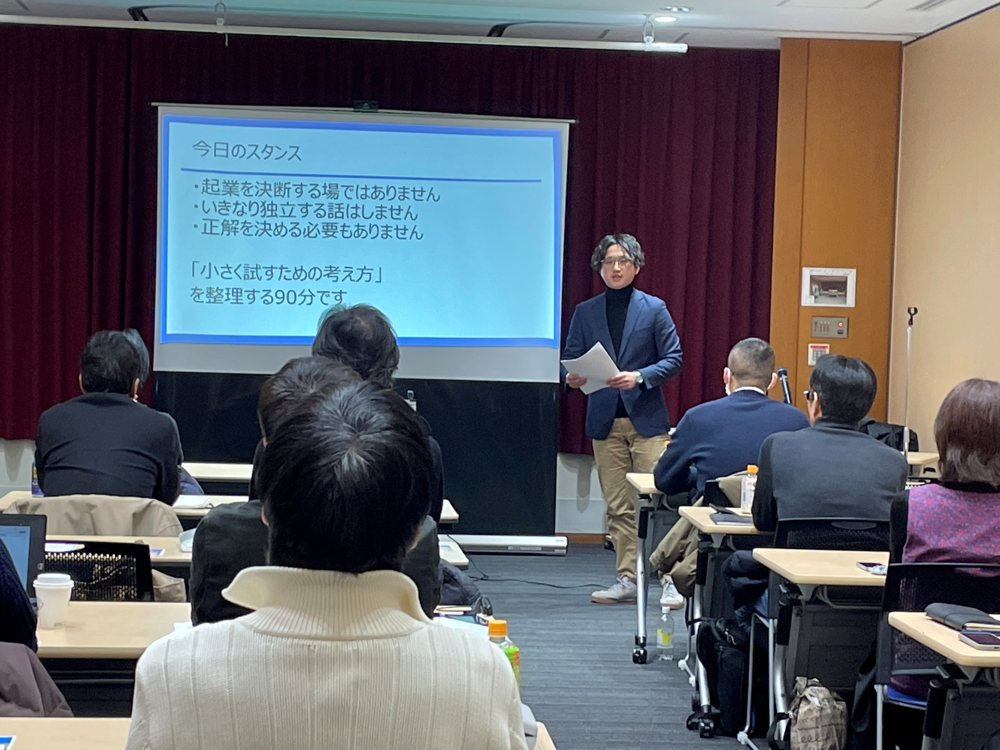

創業数十年から百余年の、老舗の社長へ
先延ばしにしてきた
次の一手を、
What's
次の一手を決める3か月
ってなに？

「次の一手を決める3か月」は、
老舗の社長と一緒に
「何から始めるか」を
決めきる伴走支援です。
調べて、語り合って、一段ずつ進む。
決めたあとは、実行にも伴走します。
「やらなきゃ」が、
ずっと頭の中にある
承継の話が出てきたが、
何を残すか決まらない
家族や社員と、
これからの話ができていない
コンサルに頼みたいが、
費用や中身が見えず不安
社長の能力や意欲の問題ではありません。
「一人で決める」には、考えることが多すぎるのです。
Trust
独立以来の支援先
20社以上
続いている顧問契約
7社
多くが創業100年近い老舗
年間の経営・創業相談
約100件
公的な創業支援窓口での相談対応

Point 1
国家資格と
国の認定を持つ専門家
中小企業診断士・行政書士の国家資格に加え、国から「認定経営革新等支援機関」の認定を受けています。上場企業2社で法務を担当してきた経験も活かします。
Point 2
料金は3か月の
総額で、はじめに明示
プランごとの金額を、このページでそのままお見せしています。契約後に追加料金が発生することはありません。現地訪問の際の交通費・宿泊費のみ、実費をいただきます。


Point 3
守秘義務と
売り込まない無料相談
行政書士には法律上の守秘義務があります。数字やご家族のことも安心してお話しください。はじめの60分は無料で、その場での契約は求めません。
「やらなきゃ」が「やると決めた」に。
| はじめる前 | 3か月後 | |
|---|---|---|
| 頭の中 | やりたいこと・やるべきことが散らばっている | 5年後の姿と道筋が1枚で見える |
| 気持ち | いつかやらなきゃ、とモヤモヤ | スッキリして、やると決めている |
| 行動 | 何から手をつけるか決まっていない | 「すぐやること」が動き出している |
| 家族・社員 | これからの話をする場がない | 同じ方向を向いて話せる |
| 数字 | 気になっているが、向き合えていない | 数字を踏まえて判断できる |
Our Way
調べて、語り合って、一段ずつ進む。この順番を大切にしています。
診断 ― しっかり調べる
お会いする前に、会社や業界、地域のことを調べます。数字も含めて現状を整理し、お話の材料を準備します。
深談 ― じっくり語り合う
社長の想いや、これまで大事にしてきたことを深く伺います。耳の痛い指摘も、新しい視点も、率直にお伝えします。
進段 ― 一段ずつ進む
決めたことを、すぐ始められる大きさに分けて実行します。進み具合を一緒に確かめながら、次の段へ進みます。
How it works

Step01
事前調査と現状整理（1か月目）
会社・業界・数字を調べ、分かりやすい資料にまとめます。
Step02
社長との対話（1〜2か月目）
残すもの・変えるものを、一緒に掘り起こします。

Step03
現地ワークショップ（スタンダード以上）
ご家族や社員の方も交え、付箋を使って前向きに未来の話をします。

Step04
5年後の姿と「すぐやるリスト」（3か月目）
目指す姿と、明日から動ける行動計画をお渡しします。
Price
内容はライト → スタンダード → プレミアムと積み上がります。
330,000円（税込）
事前調査・現状整理／オンライン対話（月2回・各90分、計6回）／
5年後の姿と「すぐやるリスト」（A4 1枚）
660,000円（税込）
おすすめライトの内容すべて＋現地ワークショップ1回＋経営計画書
990,000円（税込）
スタンダードの内容すべて＋打ち合わせを現地で実施＋幹部・従業員を巻き込んだ進め方
Voice
課題を一つずつ丁寧に
「会社の現状を細かく整理して、それぞれの課題に丁寧に対応していただいています。こちらの要望にも迅速に対応していただいています。」
有限会社是沢印刷 様

Message
ゆっくりと、
でも止まらずに。
法務の仕事で、会社が困ったときの「最後の砦」に立ち会ってきました。もっと手前で、社長が前を向けるお手伝いがしたい。そう思って中小企業診断士になりました。
名前の「悠輔」には、ゆっくりと人を助けるという意味があります。急かさず、でも止まらず。社長の隣で、次の一手を一緒に決めていきます。
倉島 悠輔中小企業診断士・行政書士／認定経営革新等支援機関
Q. 無料の60分で、契約を迫られませんか？
A. ありません。お手伝いできるか、どのプランが合いそうかを率直にお伝えします。その場でお決めいただく必要はありません。
Q. 家族や社員も一緒に参加できますか？
A. はい。スタンダード・プレミアムでは、ご家族や社員の方にも加わっていただくことをおすすめしています。
Q. 遠方でも依頼できますか？
A. はい。ライトはオンラインで完結します。スタンダード・プレミアムの現地訪問では、交通費・宿泊費の実費をいただきます。
Q. 3か月が終わったあとはどうなりますか？
A. ご希望に応じて、月1回の「進段サポート」で実行に伴走します。3か月で終了しても構いません。
お受けしていないこと
補助金の申請代行のみのご依頼は、お受けしていません。「何のために使うか」を一緒に決めたうえでの申請は、支援の中で対応いたします。